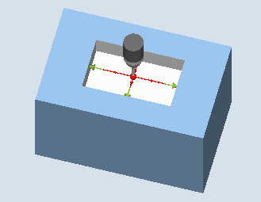
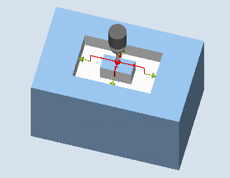

Mit dieser Messvariante kann eine Rechtecktasche in einem Werkstück vermessen werden. Es werden die Taschenbreite und die Taschenlänge gemessen und der Taschenmittelpunkt ermittelt.
Die Messungen erfolgen immer parallel zu den Geometrieachsen der aktiven Ebene. Messungen an einer um die Zustellachse gedrehten Rechtecktasche sind ebenfalls möglich. Dazu ist in der Parametriermaske ein Winkel entsprechend der realen Taschenlage einzugeben. Das Antasten an die Seiten der Tasche erfolgt immer rechtwinklig zu diesen. In der Tasche kann eine Schutzzone festgelegt werden.
Bei der Messmethode "3D-Taster mit Spindelumschlag" wird die Messung in den Achsen der Ebene als Differenzmessung ausgeführt. Es erfolgen automatisch nacheinander zwei vollständige Messungen der Rechtecktasche, einmal mit 180 Grad Spindelposition und einmal mit 0 Grad. Der besondere Ablauf dieser Messung erlaubt die Verwendung eines unkalibrierten multidirektionalen Messtasters. Der korrekte Werkzeugradius des Messtasters muss allerdings einmalig durch Kalibrieren (Abgleich) des Messtasters bestimmt werden. Die Messtastertypen 712, 713 und 714 sind dafür nicht geeignet. Eine positionierbare Spindel ist zwingend erforderlich.
Bei der Messmethode "3D-Taster ausrichten" wird die Schaltrichtung des Messtasters immer entsprechend der aktuellen Messrichtung ausgerichtet. Diese Funktion wird bei hohen Anforderungen an die Messgenauigkeit empfohlen. Die Messtastertypen 712, 713 und 714 sind dafür nicht geeignet. Eine positionierbare Spindel ist zwingend erforderlich.
Das Ergebnis der Messung (Messdifferenz) kann wie folgt verwendet werden:
Korrektur einer NV, sodass sich der Werkstücknullpunkt auf den Rechteckmittelpunkt bezieht
Korrektur eines Werkzeuges
Messung ohne Korrektur
Eine erweiterte Werkzeugkorrektur in Schwesterwerkzeuge sowie in Summen- und Einrichtekorrekturen ist möglich. Bei der Werkzeugkorrektur können generell Erfahrungswerte eingerechnet werden.
Es werden je zwei gegenüberliegende Punkte in den beiden Geometrieachsen der Ebene vermessen. Die Messungen beginnen in positiver Richtung der 1. Geometrieachse. Aus den vier gemessenen Ist-Positionen der Taschenseiten werden unter Berücksichtigung der Kalibrierwerte die Taschenbreite und die Taschenlänge berechnet. Die Lage der Taschenmitte als Werkstücknullpunkt wird entsprechend der gewählten zu korrigierenden Nullpunktverschiebung ermittelt. Die Messdifferenzen der Seitenlängen dienen als Grundgröße für eine Werkzeugkorrektur, die Lage des Taschennullpunktes als Grundlage der Nullpunktkorrektur.
Mit der Auswahl Sollwertmittelpunkt "JA", kann die Lage der Rechtecktaschenmitte als Werkstücknullpunkt, durch Sollwertvorgaben definiert werden.
|  Messen: Rechtecktasche (CYCLE977) |  Messen: Rechtecktasche mit Schutzzone (CYCLE977) |
Der Messtaster muss als Werkzeug aktiv sein.
Werkzeugtyp des Messtasters:
3D Multi-Taster (Typ 710)
Monotaster (Typ 712)
Sterntaster (Typ 714)
| Hinweis |
Folgende Messmethoden sind nur in den Achsen der Ebene möglich:
Für diese Messmethoden können die Messtastertypen 712, 713 und 714 generell nicht verwendet werden. |
| Hinweis |
In Verbindung mit den Funktionen "3D-Taster mit Spindelumschlag", "3D-Taster ausrichten" oder bei Verwendung der Messtastertypen 712 und 714 ist eine SPOS-fähige Spindel erforderlich. |
Der Messtaster ist auf die Sollposition des Taschenmittelpunkts zu positionieren. Diese, in der Tasche angefahrene Position, stellt die Startposition und gleichzeitig den Sollwert für die zu ermittelnden Korrekturen dar. Bei einer Schutzzone liegt die Position der Messtasterkugel auf einer Höhe über der Schutzzone.
Es muss gewährleistet sein, dass mit dem eingegebenen Zustellweg von dieser Höhe aus die gewünschte Messhöhe in der Tasche erreicht werden kann.
| Hinweis |
Ist der Messweg DFA so groß gewählt, dass die Schutzzone verletzt würde, so wird im Zyklus der Abstand automatisch verringert. Genügend Raum für die Messtasterkugel muss jedoch vorhanden sein. |
Ohne aktivierten Schutzbereich steht die Messtasterkugel am Messzyklus-Ende auf Messhöhe in der Taschenmitte.
Mit Schutzbereich steht die Messtasterkugel am Messzyklus-Ende mittig über der Tasche auf Höhe der Messzyklen-Startposition.
Siehe auch:
Messen: Rechtecktasche (CYCLE977)